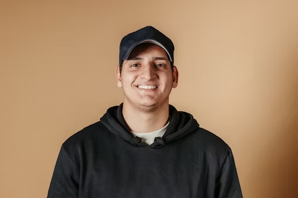

Testimonios
"Desde que uso VitaBalance me siento con más energía todos los días."
- Ricardo G., 28 años"Los suplementos me ayudaron mucho con mi digestión y defensas."
- Marcos V., 26 años

"Me siento menos cansado durante el día y duermo mejor por las noches."
- Tomás M., 32 años"Ideal para complementar mi rutina saludable. ¡Noté cambios en pocas semanas!"
- Diego R., 36 años"Mis defensas están más fuertes desde que empecé con VitaBalance."
- Ruben P., 42 años"Siento que me ayuda a mantenerme enfocado y activo durante el trabajo."
- Nicolás A., 33 años